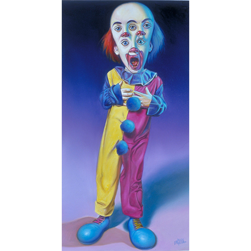

Exhibitions
Opera Gallery, gallery presentation (work exhibited and offered via gallery), Paris, France, circa 2000s.
Literature
Ron English, Abject Expressionism: The Art of Ron English (San Francisco: Last Gasp, 2002), p. 122. ISBN 978-0867196894.
Ron English, Original Grin: The Art of Ron English (Paris: Cernunnos, 2019), p. 100. ISBN 978-2374950938.
Ron English, Son of Pop: Ron English Paints His Progeny (Cotati, CA: 9mm Books, 2007), p. 35. ISBN 978-0976632511.
Notes
In Son of Pop, Original Grin, and Abject Expressionism, this work was erroneously reported as 18x32 inches.